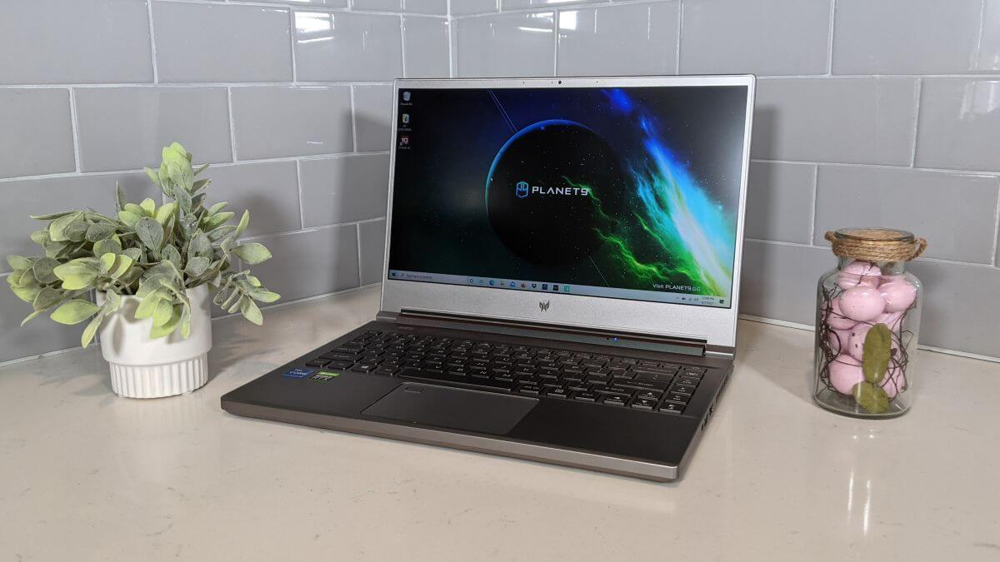

Laptop gaming luôn là chủ đề hấp dẫn cho những game thủ và người dùng cần cấu hình mạnh mẽ. Năm 2024 mang đến nhiều lựa chọn đáng chú ý với thiết kế bắt mắt và hiệu năng ấn tượng. Dưới đây là danh sách 3 laptop gaming tốt nhất mà bạn có thể cân nhắc.
1. Asus ROG Strix Scar 18
Asus ROG Strix Scar 18 là lần đầu tiên tôi nếm thử những con chip mới của Intel và Nvidia và tôi phải nói rằng, nó cực kỳ ngon. Strix Scar 18 là một con thú đúng nghĩa, chạy với bộ xử lý Core i9 13900HX thế hệ thứ 13 của Intel và GPU GeForce RTX 4090 của Nvidia. Cả hai đều cực kỳ mạnh mẽ và có khả năng ép xung cao nên bạn có thể tận dụng tối đa sức mạnh của hệ thống. Ngoài ra, laptop còn có cảm giác Blade Runner (Viễn tưởng) mà tôi rất thích cùng với màn hình 18 inch, QHD (2560 x 1600), 240Hz mang đến hình ảnh đẹp với khả năng hiển thị mượt mà. Vì vậy, trong các bài kiểm tra, ROG Strix Scar 18 đều hoàn thành xuất sắc. Trong các thử nghiệm chơi game, hiếm khi Strix Scar 18 có kết quả dưới ba chữ số. Chúng tôi đã thấy tốc độ 154 FPS trên Assassin’s Creed Valhalla trong khi nó đạt 181 và 152 FPS trên Rise of the Tomb Raider và Grand Theft Auto V. CPU thế hệ thứ 13 đã vượt qua đối thủ, đạt 19.233 điểm trên Geekbench 5.4; con số đó cao hơn gấp đôi so với mức trung bình về hiệu suất tổng thể của laptop gaming cao cấp. Hệ thống này đã hoàn thành bài kiểm tra render video của chúng tôi chỉ trong 2 phút 49 giây (nhanh hơn một phút so với MacBook Pro 16 inch M2 Pro Max), trong khi cặp ổ SSD 1TB của nó đã thống trị các bài kiểm tra truyền tập tin của chúng tôi.
Tuy nhiên, tất cả sức mạnh đó đều phải có đánh đổi. Thời lượng pin của Scar 18 tạm chấp nhận được, với 4 giờ 26 phút ở mức sử dụng trung bình. Một nhược điểm khác là webcam có độ phân giải 720p, chúng tôi mong đợi 1080p ở mức giá này. Nhưng nhìn chung, Asus ROG Strix Scar 18 là laptop gaming xứng đáng đánh bại các đối thủ khác và cũng đã lọt vào danh sách laptop Asus tốt nhất của chúng tôi.

Asus ROG Zephyrus G14 là một trong những laptop gaming nổi bật nhất hiện nay. Với vi xử lý AMD Ryzen 9 và card đồ họa NVIDIA GeForce RTX 3060, nó đảm bảo hiệu suất chơi game mượt mà. Bên cạnh đó, màn hình 14 inch với tần số quét 120Hz cung cấp hình ảnh sắc nét và trải nghiệm tuyệt vời.
Ưu điểm:
- Thiết kế phong cách tương lai
- Màn hình đẹp
- Âm thanh hay
- Hiệu suất tổng thể và chơi game ấn tượng
Nhược điểm: Giá thành cao, quạt tản nhiệt khá ồn.
2. Acer Predator Triton 300 SE
Thông số kỹ thuật
CPU: Intel Core i7 11375H | GPU: Nvidia GeForce RTX 3060 | RAM: 16GB | Dung lượng lưu trữ: 512GB | Màn hình: 14 inch, 1080p @ 144Hz | Trọng lượng: 1,7 kg
Acer đã tạo dựng danh tiếng của mình nhờ khả năng cung cấp các dòng laptop chất lượng với giá cả phải chăng và chỉ với 25 triệu, không tốn quá nhiều tiền, Triton 300 SE cung cấp mọi thứ bạn cần từ một chiếc Laptop Gaming: hiệu năng Intel Core i7 thế hệ thứ 11; hình ảnh tuyệt đẹp được hỗ trợ bởi Nvidia GeForce RTX 3060; màn hình 1080p sắc nét, tươi sáng, sống động; và tần số quét 144Hz. Tuyệt vời hơn nữa là tất cả đều được đặt trong một khung máy màu bạc mỏng và đầy phong cách. Triton 300 SE có một số tính năng thú vị khác, bao gồm bàn phím thoải mái với RGB ba vùng và thời lượng pin ổn định kéo dài hơn 6 tiếng rưỡi trong quá trình thử nghiệm của chúng tôi Tuy nhiên, điểm đặc biệt nhất của Triton 300 SE là hiệu năng và trên một loạt các tựa game AAA đồ họa cao, Triton 300 SE đã thể hiện số khung hình ấn tượng — ngay cả ở cài đặt tối đa. Nếu bạn mua với mức giá vừa phải, điều quan trọng nhất là giá trị mà nó mang lại. Về hiệu suất / tỷ lệ giá của Acer Predator Triton 300 SE là không ai sánh kịp.
Ưu điểm:
- Hiệu suất và đồ họa mạnh mẽ
- Thời lượng pin tốt
- Màn hình sáng và đầy màu sắc
- Kiểu dáng đẹp, khung gầm 14 inch
Nhược điểm: Thiết kế hơi cồng kềnh, pin không bền.
3. Lenovo Legion 5i Pro
Thông số kỹ thuật
CPU: Intel Core i7 13700HX | GPU: Nvidia GeForce RTX 4060 | RAM: 16GB | Bộ nhớ: SSD 512GB NVMe M.2 2230 | Màn hình: 16 inch, QHD (2560 x 1600) ở 165Hz | Trọng lượng: 2,49kg

Acer đã tạo dựng danh tiếng của mình nhờ khả năng cung cấp các dòng laptop chất lượng với giá cả phải chăng và chỉ với 25 triệu, không tốn quá nhiều tiền, Triton 300 SE cung cấp mọi thứ bạn cần từ một chiếc Laptop Gaming: hiệu năng Intel Core i7 thế hệ thứ 11; hình ảnh tuyệt đẹp được hỗ trợ bởi Nvidia GeForce RTX 3060; màn hình 1080p sắc nét, tươi sáng, sống động; và tần số quét 144Hz. Tuyệt vời hơn nữa là tất cả đều được đặt trong một khung máy màu bạc mỏng và đầy phong cách. Triton 300 SE có một số tính năng thú vị khác, bao gồm bàn phím thoải mái với RGB ba vùng và thời lượng pin ổn định kéo dài hơn 6 tiếng rưỡi trong quá trình thử nghiệm của chúng tôi . Tuy nhiên, điểm đặc biệt nhất của Triton 300 SE là hiệu năng và trên một loạt các tựa game AAA đồ họa cao, Triton 300 SE đã thể hiện số khung hình ấn tượng — ngay cả ở cài đặt tối đa. Nếu bạn mua với mức giá vừa phải, điều quan trọng nhất là giá trị mà nó mang lại. Về hiệu suất / tỷ lệ giá của Acer Predator Triton 300 SE là không ai sánh kịp.
Ưu điểm:
- Thiết kế và phong cách tuyệt vời
- Màn hình đẹp
- Bàn phím tuyệt vời
Nhược điểm:
- Âm thanh nhỏ
- Webcam chưa nét
Lenovo Legion Pro 5i là sự lựa chọn tuyệt vời cho những ai đang tìm kiếm cổ máy có sức mạnh kinh ngạc nhưng đặc biệt tập trung vào hiệu suất. Trang bị bộ xử lý Intel Core i7 13700HX, Nvidia GeForce RTX 4060 với card đồ họa VRAM 8GB, RAM 16GB, bộ nhớ SSD 512GB và màn hình 16 inch, QHD (2560 x 1600) ở tần số quét 165Hz giúp trải nghiệm chơi game tuyệt vời. Với số điểm Geekbench 6 là 13.634, đây là điểm mạnh nhất trong danh sách này. Và với màn hình có độ phủ màu ở mức 82,8% DCIP3, cùng với độ sáng đạt 349 nits, màn hình của Lenovo Legion Pro 5i tuyệt vời một cách đáng ngạc nhiên. Nhìn chung, đây là lựa chọn phù hợp cho những ai cần sự cân bằng vững chắc giữa sức mạnh đồ họa và khả năng xử lý mà không phải hy sinh quá nhiều thứ này hay thứ kia.